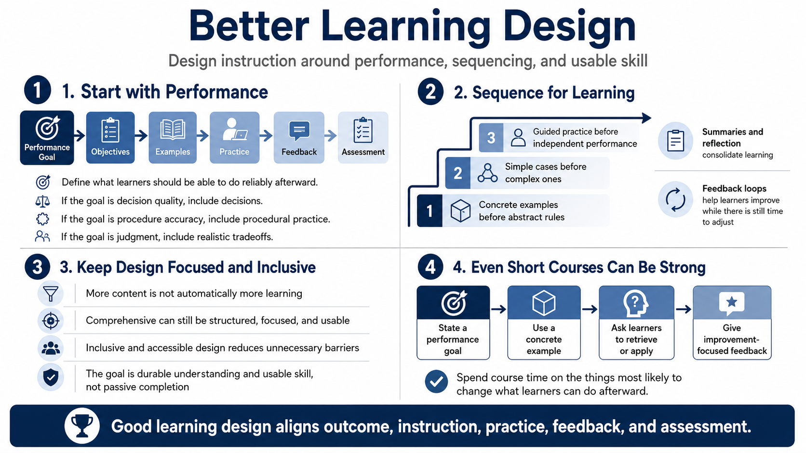

Designing Better Learning Experiences
Connecting to LMS... Progress: in progress

Narration
Better learning design begins with performance. What should learners be able to do after the course that they could not do reliably before? Once that outcome is clear, the objective, examples, practice, feedback, and assessment can all point in the same direction. If the goal is decision quality, the course should include decisions. If the goal is procedure accuracy, the course should include procedural practice. If the goal is judgment, the course should expose learners to realistic tradeoffs.
Sequencing matters. Learners often benefit from concrete examples before abstract rules, simple cases before complex ones, and guided practice before independent performance. Summaries and reflection help learners consolidate what they noticed and connect it to future use. Feedback loops help them improve while there is still time to adjust. Assessment alignment keeps the course honest by measuring the capability the instruction was supposed to build.
Good design also avoids information dumps. More content is not automatically more learning. A course can be comprehensive and still be structured, focused, and usable. Inclusive and accessible design strengthens learning by reducing unnecessary barriers and making participation more reliable across different learners and environments. The aim is not passive completion. The aim is to create conditions where people can build durable understanding and usable skill.
This does not require every course to be elaborate. Even a short module can be stronger when it states a performance goal, uses a concrete example, asks learners to retrieve or apply the idea, and gives feedback that points to improvement. The discipline is to spend course time on the things most likely to change what the learner can do afterward.